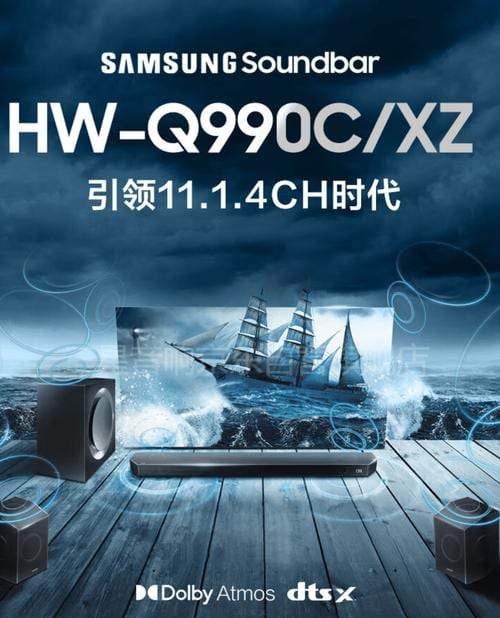

三星 Q990C

三星旗舰回音壁套装，11.1.4 声道含无线后环绕与低音炮，开箱即成完整环绕影院，Q-Symphony 与三星电视协同发声，空间自适应调校省去繁琐设置，是一步到位的客厅影院方案。
客观评测
Q990C 为 11.1.4 声道套装，包含条形音箱、无线后环绕与无线低音炮，支持 Dolby Atmos 与 DTS:X，配备 HDMI eARC 与 HDMI 输入。实测环绕包围感在消费级回音壁中属顶级水准，后环绕的加入让声音真正从身后传来，低音炮量感充沛。空间自适应音效可依房间结构自动调校，Q-Symphony 与三星电视可协同发声。
主观点评
这套东西装好后的第一晚，全家都愿意窝在沙发上看电影了：子弹从耳边飞过、雨声落在头顶，后环绕带来的后方声场是单条回音壁给不了的。设置也省心，让机器自己测一遍房间就完事。它不便宜，还要给三件套找地方放，但相比动辄上万的传统家庭影院，它用最低的门槛把「电影院搬回家」这件事做成了。
优点与不足
- 套装开箱即得完整环绕，无需另购配件
- 11.1.4 声道包围感强，全景声效果突出
- 空间自适应调音，摆好就能出好声
- 套装总价高，体积部件多需摆放空间
- 非三星电视用户部分协同功能无法使用
- 低音炮体型大，小客厅略显压迫
参数规格
| 声道 | 11.1.4 声道（条形音箱 + 无线后环绕 + 无线低音炮） |
|---|---|
| 功率 | 系统总功率约 656W（厂商标称） |
| 解码 | Dolby Atmos、DTS:X |
| 连接 | HDMI eARC、HDMI 输入、光纤、蓝牙、Wi-Fi |
| 后环绕 | 无线后环绕音箱（含向上发声单元） |
| 低音炮 | 无线低音炮，8 英寸单元量级 |
| 技术 | Q-Symphony 电视协同、空间自适应音效、自适应音效 |
| 语音 | 支持 Alexa 等语音助手（视地区） |
| 尺寸 | 条形音箱约 1120 × 60 × 120 mm |
| 重量 | 条形音箱约 7.7 kg |